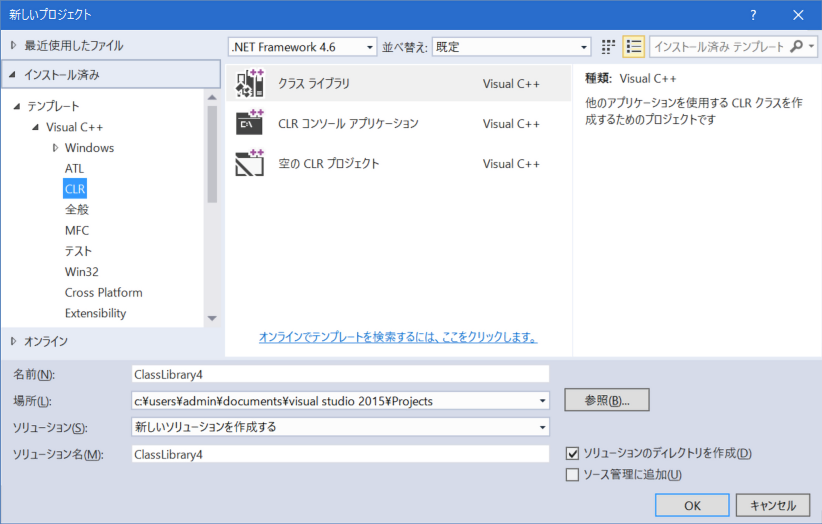

導入時期にもよるかもしれませんが、Visual Studio 2015以降、
Visual StudioをインストールしただけではC++のフルの機能が利用可能とはなっていません。
Visual Studio 2015のメニューより「ファイル」「新規作成」「プロジェクト」 を選び、
以下の図のような、「Win32」や「CLR」といった項目が見えるよう、拡張機能をインストールしましょう。
(これらの項目が見えていない場合は、これらの項目の替わりに何かインストールする項目が見えるハズです。)

「Release」「x86」でビルドしてください。
初めての際や、新しいバージョンのHD.version.SDKへと更新した場合など、
必ずリビルドしましょう。
ReleaseフォルダにHD.version.dllが出来上がりますので、このファイルを天翔記フォルダへとコピーしましょう。